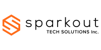
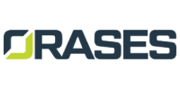
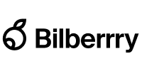
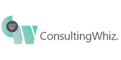
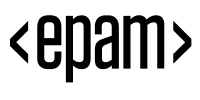
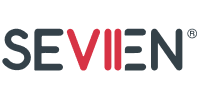

So, you’re at a stage in your product journey that you’re all set to build your ground-breaking software idea. You’re now searching for the leading custom software development agencies in USA to build your product. However, I also understand that the road ahead can be challenging and that is why I’ve put together a comprehensive list in this blog. We’re gonna look at the top 10 best agencies you can choose in the US, what they are all about and the pros and cons of each software development agency.
A Deep Dive Into The Top 10 Custom Software Development Agencies In USA For 2024
When it comes to building software products, hiring a software development agency is the best route to go especially if you’re a new startup. Even if you’re an enterprise, new product development comes with a lot of associated costs. By subcontracting your software development needs to a software development agency, you’re delegating the fiddly bits while you concentrate on building your actual business. However, finding the right software provider is crucial because it can be the difference between a great app and a buggy one.
There are plenty of custom software development agencies in USA to choose from and the list that I’ve prepared covers the top 10 best providers you could hire. However, it's important to understand that you should choose a software development based on what your requirements are. On paper, all of these agencies are very good at what they do. They might be great at some things and less experienced in other areas. But the information you get should help you find the right fit for your project.
So, let's dive right into the rabbit hole and see.
Our Comprehensive Top 10 List For The Best Custom Software Development Agencies in USA
The top 10 companies I've mentioned here have a lot to offer. As the top custom software development agencies in USA, some of them focus only on engineering and others also provide marketing services. Keep an eye on what your priorities are before choosing anyone.
1. Sparkout Tech Solutions Inc.

Sparkout Tech Solutions Inc is a premium provider of custom software development services based in Dover, Delaware. It is a well known agency that works with businesses of all sizes including small businesses and startups to large enterprises. For the same reason, they offer a wide range of services within software development which includes multiple technologies.
Additionally, Sparkout is a software development agency with a key focus on emerging and trending technologies like blockchain technology, artificial intelligence and machine learning making them one of the top custom software development agencies in USA.
Apart from product development, Sparkout also has strong partnerships in the industry with multiple entities and other agencies. These include big technology companies, marketing and PR agencies, cloud providers and consulting companies. Additionally, Sparkout has a tailored approach to software development which includes multiple engagement models and pricing structures. If you want to build an MVP as a startup or solo founder, you can easily work on a per project or Waterfall model where you can build the core functionalities of your product in a fixed budget. However, if you’re looking for custom software development agencies in USA to integrate more developers into your existing team, Sparkout also provides staff augmentation services. Additionally, you can choose the Agile model where you pay a monthly fee and you can make adjustments to your development plans on the go. With 7+ years of experience and a strong team of 100+ Sparkout is the right choice for you if you’re looking for a comprehensive development company with a capable team.
Pros:
- Strong focus on multiple emerging technologies like blockchain, AI and ML as a leading software development agency.
- Multiple engagement and pricing models to choose from.
- A great lineup of industry partnerships being one of the top custom software development agencies in USA which consists of industry leaders.
- A wide array of development offerings with different technologies.
Cons:
- The premium service might also carry a premium cost depending on the scale of your product.
- Because the services are comprehensive the delivery timelines can be slightly longer than very small providers.
Website - www.sparkout.com
2. Orases

Orases is another big name in the custom software development space and they’re based in Frederick, Maryland. Their major focus is on creating cutting edge software that’s tailor made for their clients and their customers.
If you look at their specialization as one of the top custom software development agencies in USA they work on both mobile and web applications and build a variety of different kinds of solutions. Software as a service or SaaS and enterprise solutions are their strong suits. Additionally, as a software development agency they are very well known for delivering robust software that is very user friendly. Orases also works with different kinds of clients in different industries such as finance, healthcare, sports and non profit organizations. One of their major benefits is that they provide highly scalable and secure solutions by using deep industry knowledge and the latest technologies.
Pros:
- Strong focus on building solutions that are tailored to client needs and business models as one of the top custom software development agencies in USA.
- Very good experience and knowledge across different industries.
- They concentrate on creating long term partnerships within the industry for support.
Cons:
- Since they provide bespoke solutions as an expert software development agency their costs might be on the higher side.
- Since they provide comprehensive custom software development the delivery timelines can also be on the higher side.
Website - www.orases.com
3. VironIT
Another big name in the custom software development space and also a full service development agency. Since they are a full service company their offerings include development for mobile and web along with IT consulting services.
They also have a strong presence in the global market as one of the leading custom software development agencies in USA and they also have experience working with clients in different industries. The industries they service include healthcare, gaming and finance. Their focus on innovation and futuristic technologies is very high with good focus on blockchain technology, artificial intelligence and virtual reality. VironIT’s approach as a software development agency is definitely client centric which means that they tailor their software solutions to the needs and goals of their clients.
Pros:
- A very comprehensive array of services as a software development agency which includes emerging technologies such as artificial intelligence and blockchain.
- They have a very good international presence as leading custom software development agencies in USA if you want a company in the US but you’re outside of the US.
- They are very much focused on solutions that are innovative and cutting edge.
Cons:
- If you’re outside of the US you might find the time zone differences a bit difficult.
- Costs for your project might fluctuate based on the complexity of your project.
Website - www.toptal.com
4. Bilberry

Bilberry is one of the software development companies in USA that specializes in digital product development and design. They work on both mobile based and web based platforms for product development. Bilberry hails from Seattle, Washington and they are well known as one of the best custom software development agencies in USA providing their clients with solutions that are both visually stunning and highly functional.
Additionally, they work with businesses of all sizes which includes smaller startups to established organizations. as one of the leading software development companies in USA Bilberry focuses highly on building solutions that are user centric and provides a great user experience regardless of which platform they use. If you’re looking for an agency that cares deeply about the user experience design of your product then Bilberry is a good choice for you.
Pros:
- Strong focus on design and user experience which is crucial for user centric applications.
- As one of the top custom software development agencies in USA they work very closely with their clients and you can get a product that aligns with your vision.
- A great thing about them is that they provide flexible development services through the Agile method.
Cons:
- They focus a lot on niche solutions which might be a problem for you if your idea covers a broader market.
- Since they provide highly customized solutions as one of the top software development companies in USA their costs might be higher.
Website - www.bilberrry.com
5. ConsultingWhiz LLC

ConsultingWhiz is a software development agency that hails from Irvine in California. They offer a wide array of services which includes digital transformation and consulting services for mobile development, web development and custom software as one of the top rated custom software development agencies in USA.
One of their major advantages is that they specialize in building complex solutions that are at the same time secure and scalable. Since they focus highly on digital transformation their goal is to help businesses streamline their operations, improve their customer engagement and drive growth through innovation and technology. Additionally, as a software development company, USA they work with clients from various sections and provide solutions that address your specific challenges.
Pros:
- Their offerings are very wide in terms of software development and IT consulting.
- A strong focus on innovation and using technologies to build solutions that are cutting edge being one of the top custom software development agencies in USA.
- Their unique quality is that they focus on building solutions that can scale as your company grows.
Cons:
- Their services are premium so they may be more expensive to work with than other firms.
- as a software development company, USA primary presence is in California which might be an issue if you’re looking for a company with worldwide presence.
Website - www.consultingwhiz.com
6. Unique Software Development
An industry leader from the booming tech climate of Texas. Unique Software Development is an agency based out of Dallas and their major area of focus is in creating innovative and customized solutions. They are very well known for building solutions that are customer centric as one of the top custom software development agencies in USA.
To achieve this they work closely with you to understand your pain points and build solutions that are tailored to your business. Unique Custom Software is a software development company, USA that works with clients across multiple industries such as healthcare, finance and retail. They are a great service provider if you’re looking for solutions where you can leverage technology to achieve growth and efficiency.
Pros:
- A personalized service where you can get client centric solutions tailored to your business needs.
- Their experience is very versatile and spans across multiple industries and use cases as one of the leading custom software development agencies in USA.
- A very strong emphasis on building creative and innovative solutions in terms of design and development.
Cons:
- As their solutions are customized and personalized their costs can be on the higher side.
- If you have a large scale project their relatively smaller team size as a software developer agency can be a limiting factor.
Website - www.uniquesoftwaredev.com
7. Epam

A leading software developer agency for software engineering and product development services with a global presence. EPAM’s presence is very wide globally and they have worked with companies in over 30 countries.
Like many of their competitors EPAM is one of the leading custom software development agencies in USA that provides services in digital transformation, IT consulting and operations and of course software development. They are also very strong if you want help in areas like data analytics, cloud computing and artificial intelligence for building cutting edge and innovative solutions as a software developer agency. EPAM is very well known for working with industry leading companies worldwide and helping them tackle complex digital challenges and build robust solutions.
Pros:
- They have extensive presence in multiple countries as a software developer agency which could make their services more accessible to you.
- They can help you build modern solutions in emerging technologies like artificial intelligence and cloud computing.
- As a leading name among custom software development agencies in USA their services offerings for software development and consulting are very comprehensive.
Cons:
- Their primary focus is on working with large enterprises which might be a barrier for you if you’re a smaller business.
- Since they work on large scale and complex projects as a software developer agency their delivery timelines and costs might be on the higher side.
Website - www.startups.epam.com
8. Entrance Consulting
Entrance Consulting is one of the leading software development companies, USA and worth looking at if you’re an energy or industrial company. Their headquarters is in Houston, Texas and provide specialized services in software development and technology consulting. Entrance Consulting’s wide range of offerings include custom software solutions, data management and IT consulting as one of the leading custom software development agencies in USA.
Their key focus is on working with industrial and energy companies to tailored and optimized solutions that drive business growth. For many companies worldwide Entrance is the go to service provider for creating software that improves operational efficiency. Their approach is highly client centric and helps you create solutions using modern technologies for achieving your business goals.
Pros:
- If you’re from the energy or industrial sector they have deep industry expertise to help you.
- Their focus is on working closely with clients to understand their pain points and creating tailored solutions as one of the premium software development companies, USA.
- As one of the top custom software development agencies in USA their solutions put a key focus on using technology to be efficient in terms of business operations.
Cons:
- As their major focus is on a particular niche if you’re in a different sector they might not be the right fit for you.
- They have a regional presence in Houston, Texas which might be limiting for you if you’re in a different location.
Website - www.entranceconsulting.com
9. SEVEN

SEVEN is one of the top software development companies, USA that offers full service product development. Their offerings are wide which includes custom software development, web and mobile application development and technology consulting.
Their primary focus as one of the leading custom software development agencies in USA is on building customized solutions for businesses using cutting edge technology to help your business goals. Along with this they have proven experience working with complex projects and offering end to end solutions from concept development to deployment on production.
Pros:
- They offer comprehensive development services from concept development to deployment on production.
- They are known for working closely with their clients and can help you build software that is tailored to your business needs as one of the trusted custom software development companies in USA.
- They are very flexible since their offerings cover a wide range of industries and use cases as one of the top custom software development agencies in USA.
Cons:
- If you have a complex project then their development timelines can be longer.
- Since they are a relatively small custom software development company, USA they might not be able to handle multiple projects at once.
Website - www.sevencollab.com
10. Oxagile
Oxagile is is one of the major custom software development companies in USA and a great agency to work with if you’re operating your business in areas like video streaming, EdTech and healthcare. They are based out of New York and known for working with companies worldwide delivering software solutions that are secure and scalable.
If you’re in the media and entertainment sectors their expertise in video content delivery could be very beneficial for you. Since they are one of the leading custom software development agencies in USA they offer a full service offering which includes mobile and web app development, custom product development and technology consulting. Additionally, they are well known for building solutions that are future proof using cutting edge technologies.
Pros:
- They have a strong focus on video streaming and Edtech as a custom software development company, USA.
- They specialize in providing scalable solutions for international businesses.
- They use the latest technologies to give you advanced software solutions.
Cons:
- Since they focus on a particular niche they might not be the right fit for you if you’re not in the media or EdTech sectors.
- Since they work with complex technologies as one of the leading custom software development agencies in USA their development timelines can be longer and this could also carry higher costs.
Website - www.oxagile.com
That’s a wrap for our list of custom software development agencies in USA for 2024
Congratulations, now you’re ready to choose the right technology partner for you on your journey to build the next big software platform. All the agencies I’ve mentioned here are among the top custom software development companies in the US region and you can’t go wrong choosing any one of them. However, you know your business and the needs of your customers. Some agencies are better at certain things than others. Make sure you pick a provider that aligns with the requirements of your business. If this blog helped you out then share it with another product founder who’s on the lookout for the best custom software development agencies in USA.